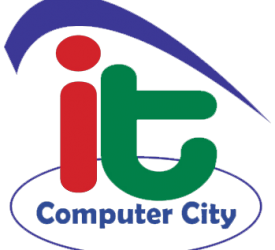

 ২০০৭ সালের ২৫ শে জুন আইটি কম্পিউটার চাঁদপুর জেলা শহরের বাসস্ট্যান্ড ফয়সাল শপিং কমপ্লেক্স এর ২য় তলায় মোঃ সাইফুল ইসলামের নিজস্ব ব্যবস্থাপনায় প্রতিষ্ঠিত হয় আইটি কম্পিউটার সিটি। প্রতিষ্ঠালগ্নে প্রতিষ্ঠানটি আর্থিক অবস্থা ছিল খুবই শোচনীয়। ৮০ স্কয়ার ফিট আয়তনের কক্ষে ১টি মাত্র কম্পিউটার এবং ৫ জন ছাত্র নিয়ে কম্পিউটার সিটির যাত্রা শুরু হয়। আইটির পরিচালক জনাব সাইফুল ইসলাম মনে করতেন, যে ৫ জন ছাত্র/ছাত্রী নিয়ে শুরু করেছেন তাদেরকে কম্পিউটার প্রশিক্ষন দিয়ে এমনভাবে তৈরী করবেন যেন তাদের কাজ বা দক্ষতা দেখে অন্যরা এসে তার ইনষ্টিটিউটে ভর্তি হয়। আর ঠিক সেই কারণে যারা প্রশিক্ষণ নিয়েছিল তারা প্রত্যেকে ছাত্র/ছাত্রী দিতে শুরু করলো। এভাবে আইটি কম্পিউটার সিটি অনেকটা এগিয়ে যায়। এস.এস.সি/ এইচ.এস.সি পরীক্ষার হল থেকে যখন ছাত্র/ছাত্রীরা বের হত তখন তাদের হাতে ষ্টিকার, লিফলেট তুলে দেওয়ার মাধ্যমে প্রতিষ্ঠানটি বহুল প্রচারিত হয়। ২০০৮ সালে কম্পিউটার সিটির কম্পিউটার সংখ্যা ৬টি এবং মানুষের কাছে ইন্টারনেট সেবা পৌছে দেওয়ার দায়িত্ব নেয়। ২০০৯ সালে চাঁদপুর জেলার সর্বোচ্চ ছাত্র/ছাত্রীদেরকে কম্পিউটার প্রশিক্ষণ দেয়ার জন্য বিভিন্ন ধরনের পুরুস্কার অর্জন করে। ০৬ সেপ্টেম্বর ২০১০ইং তারিখে আইটি কম্পিউটার সিটি গণপ্রজাতন্ত্রী বাংলাদেশ সরকার অনুমোদিত ওয়ার্ল্ড আইটি ফাউন্ডেশনের আঞ্চলিক সেন্টার হিসাবে স্বীকৃতি পায়। সরকারি রেজিঃ লাভের পর আইটি কম্পিউটার সিটির ছাত্র/ছাত্রী সংখ্যা বাড়তে শুরু করল। আইটি কম্পিউটার সিটির অন্যতম বৈশিষ্ট্য হচ্ছে ছাত্র/ছাত্রীদেরকে উন্নতক পদ্ধতিতে অভিজ্ঞ ইনষ্ট্রাক্টর দ্বারা কম্পিউটার প্রশিক্ষণ প্রদান এবং সেমিঃ পদ্ধতিতে পরীক্ষা গ্রহণ, ওয়েব সাইডে ফলাফল প্রকাশ এবং আনুষ্ঠানিক ভাবে সার্টিফিকেট বিতরণ। ২০১১ সালে ৪ঠা জানুয়ারিতে কম্পিউটার সিটির ক্যাম্পাস হলে ছাত্র/ছাত্রীদের মাঝে সনদ বিতরণী অনুষ্ঠানে প্রায় ৩০০ জন ছাত্র/ছাত্রীর মাঝে সনদ বিতরণ করেন ওয়ার্ল্ড আইটি ফাউন্ডেশনের সম্মানিত চেয়ারম্যান মোঃ সোহরাব হোসেন। সনদ বিতরণ কালে তিনি বলেন ডিজিটাল বাংলাদেশ গড়তে কম্পিউটার প্রশিক্ষণের বিকল্প নাই। অনুষ্ঠানে প্রায় ৫ শতাধিক ছাত্র/ছাত্রী অভিভাবক সাংবাদিক ও সুধী জন উপস্থিত ছিলেন। ২০১১ সালের ২৮ অক্টোবর ওয়ার্ল্ড আইসটিতে স্বর্ণপদক অর্জন করে আইটি কম্পিউটার সিটির পরিচালক প্রশাসন মোঃ সাইফুল ইসলাম। এর পর ০২ ডিসেম্বর ২০১১ইং চাঁদপুর জেলা প্রশাসকের পক্ষ থেকে চাঁদপুর জেলা শিল্প কলা একাডেমীতে চাঁদপুরের জেলা প্রশাসক সার্বিক মোঃ মতিউল ইসলাম কর্তৃক সংবর্ধনা গ্রহণ করেন আইটি কম্পিউটার সিটির পরিচালক প্রশাসন মোঃ সাইফুল ইসলাম। ২০১৪ সালে চাঁদপুর জেলা আইসিটি পুরস্কার অর্জন করে আইটি কম্পিউটার সিটি। এ পর্যন্ত প্রায় ৫ হাজারেরও অধিক শিক্ষার্থীদের দক্ষতার সাথে কম্পিউটার প্রশিক্ষণ দিয়েছে। যাদের মধ্যে বেশিরভাগ শিক্ষার্থী বর্তমানে সরকারি ও বেসরকারি বিভিন্ন অফিস আদালত, ব্যাংক, বীমা ইত্যাদি প্রতিষ্ঠানে কর্মরত আছে।